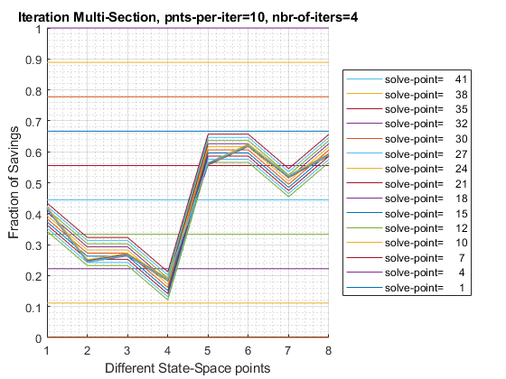

FF_OPTIM_MLSEC_SAVEZRONE Bi(Multi)section Vectorized
Vectorized Multi-section (multiple points bisection concurrently) given anonymous function that outputs the derivative of the optimal savings function. The function assumes that the lower and upper bounds starting points are the same for each row of the input parameter matrix. Savings problem where agents save 0 to 100 percent of available resoures (including borrowing bounds in resource).
This function might be slower than bisection (FF_OPTIM_BISEC_SAVEZRONE). This is a testing of concept. The solution concept is really only useful when within each iteration, each solution requires significant computing time, and is parallized. In that setting, the increase in total points where we evaluate the model does not reduce computing speed, but we gain from the reductions in iterations.
* FC_DERI_WTH_UNIROOT anonymous function handle, given an array of asset choice fractions, savings given resource availability (including borrowing bounds), compute derivative value. * MP_MLSEC_CTRLINFO map with number of iterations and number of points to solve for at each iteration. if it_mlsect_jnt_pnts = 10, it_mlsect_max_iter = 4, this means there will be four iterations, and at each iteration, 10 zoomed in additional points will be evaluated at. What is the total precision? (fl_x_right_start-fl_x_left_start)/(10*11*12*14), given that the bound is approximately 1, the precision is 0.00005827505. 10*11*12*13 = 17160.
mp_mlsec_ctrlinfo = containers.Map('KeyType','char', 'ValueType','any');
% within each multisection iteration, points to solve at
mp_mlsec_ctrlinfo('it_mlsect_jnt_pnts') = 10;
% number of iterations
mp_mlsec_ctrlinfo('it_mlsect_max_iter') = 4;
% starting savings share, common for all
mp_mlsec_ctrlinfo('fl_x_left_start') = 10e-6;
% max savings share, common for all
mp_mlsec_ctrlinfo('fl_x_right_start') = 1-10e-6;[AR_OPTI_SAVE_FRAC] = FF_OPTIM_MLSEC_SAVEZRONE() default optimal saving and borrowing fractions.
[AR_OPTI_SAVE_FRAC] = FF_OPTIM_MLSEC_SAVEZRONE(FC_DERI_WTH_UNIROOT, BL_VERBOSE, BL_TIMER, MP_MLSEC_CTRLINFO) decide if to print verbose, verbose print will generate graphical and tabular outputs, control timer, and change iteration number of points per iteration via mp_mlsec_ctrlinfo_ext.
[AR_OPTI_SAVE_FRAC, AR_OPTI_SAVE_LEVEL] = FF_OPTIM_MLSEC_SAVEZRONE(FC_DERI_WTH_UNIROOT) given function handle for savings borrowing function derivative with an array of outputs, each representing a different set of state-space points, solve for optimal savings levels and savings fractions.
[AR_OPTI_SAVE_FRAC, AR_OPTI_SAVE_LEVEL, AR_OPTI_FOC_OBJ] = FF_OPTIM_MLSEC_SAVEZRONE(FC_DERI_WTH_UNIROOT) also output FOC objective.
[AR_OPTI_SAVE_FRAC, AR_OPTI_SAVE_LEVEL, AR_OPTI_FOC_OBJ, TB_MLSEC_INFO] = FF_OPTIM_MLSEC_SAVEZRONE(FC_DERI_WTH_UNIROOT, true) also output convergence iteration information.
see also FX_OPTIM_MLSEC_SAVEZRONE, FF_OPTIM_BISEC_SAVEZRONE, FF_OPTIM_MZOOM_SAVEZRONE
Contents
- Set and Update Support Map
- Parse mp_grid_control
- Timer Start
- Get output dimension and initial lower and upper points
- Iterate and Evaluate
- Get Levels
- Return
- Timer End
- print details
- Return
- Intertemporal Maximization with Log Util, no Shock, Two Periods, Endowments
- Solution Intertemporal Maximization with Log Util, no Shock, Two Periods, Endowments
function varargout = ff_optim_mlsec_savezrone(varargin)
if (~isempty(varargin)) % NOT called interally with the testing function ffi_intertempora_max below bl_verbose = false; bl_timer = false; if (length(varargin) == 1) [fc_deri_wth_uniroot] = varargin{:}; elseif (length(varargin) == 2) [fc_deri_wth_uniroot, bl_verbose] = varargin{:}; elseif (length(varargin) == 3) [fc_deri_wth_uniroot, bl_verbose, bl_timer] = varargin{:}; elseif (length(varargin) == 4) [fc_deri_wth_uniroot, bl_verbose, bl_timer, mp_mlsec_ctrlinfo_ext] = varargin{:}; end else close all; % called interall with the testing function ffi_intertempora_max below bl_verbose = true; bl_timer = true; % 1. ffi_intertemporal_max at the end of this function is two period % intertemporal utility maximization problem where the choice is % savings or borrowing. The problem has natural bounds, 0 and 1, which % represent minimum and maximum percentage of resource saved or % borrowed. See: % https://fanwangecon.github.io/Math4Econ/derivative_application/htmlpdfm/K_save_households.html it_exam = 2; if(it_exam==1) % 2. Solve concurrently for combinations of z1, z2, r, and beta values ar_z1 = [1,1,2,2,3,3]'; ar_z2 = [3,3,2,2,1,1]'; ar_r = 1.10 + zeros(size(ar_z1)); ar_beta = [0.80, 0.95, 0.80, 0.95, 0.80, 0.95]'; % mt_fc_inputs = [ar_z1, ar_z2, ar_r, ar_beta]; elseif(it_exam==2) rng(123); it_draws = 8; % must be even number ar_z1 = exp(rand([it_draws,1])*3-1.5); ar_z2 = exp(rand([it_draws,1])*3-1.5); ar_r = (rand(it_draws,1)*10.0); ar_beta = [rand(round(it_draws/2),1)*1; rand(round(it_draws/2),1)*1+1]; elseif(it_exam==3) % run many check speed rng(123); it_draws = 6250000; % must be even number bl_verbose = false; bl_timer = false; ar_z1 = exp(rand([it_draws,1])*3-1.5); ar_z2 = exp(rand([it_draws,1])*3-1.5); ar_r = (rand(it_draws,1)*10.0); ar_beta = [rand(round(it_draws/2),1)*1; rand(round(it_draws/2),1)*1+1]; elseif(it_exam==4) [ar_z1, ar_z2, ar_r, ar_beta] = deal(0.4730, 0.6252, 0.0839, 0.7365); end % 3. define function with the fixed matrix of input fc_deri_wth_uniroot = @(x) ffi_intertemporal_max(... x, ar_z1, ar_z2, ar_r, ar_beta); end
Set and Update Support Map
mp_mlsec_ctrlinfo = containers.Map('KeyType','char', 'ValueType','any'); % within each multisection iteration, points to solve at mp_mlsec_ctrlinfo('it_mlsect_jnt_pnts') = 10; % number of iterations mp_mlsec_ctrlinfo('it_mlsect_max_iter') = 4; % starting savings share, common for all mp_mlsec_ctrlinfo('fl_x_left_start') = 10e-6; % max savings share, common for all mp_mlsec_ctrlinfo('fl_x_right_start') = 1-10e-6; % override default support_map values if (length(varargin)>=4) mp_mlsec_ctrlinfo = [mp_mlsec_ctrlinfo; mp_mlsec_ctrlinfo_ext]; end
Parse mp_grid_control
params_group = values(mp_mlsec_ctrlinfo, {'it_mlsect_jnt_pnts', 'it_mlsect_max_iter'});
[it_mlsect_jnt_pnts, it_mlsect_max_iter] = params_group{:};
params_group = values(mp_mlsec_ctrlinfo, {'fl_x_left_start', 'fl_x_right_start'});
[fl_x_left_start, fl_x_right_start] = params_group{:};
Timer Start
if (bl_timer) tic; end
Get output dimension and initial lower and upper points
[ar_lower_fx, ~] = fc_deri_wth_uniroot(fl_x_left_start); it_out_rows = size(ar_lower_fx,1); ar_lower_x = fl_x_left_start + zeros(it_out_rows, 1); ar_upper_x = fl_x_right_start + zeros(it_out_rows, 1); if(bl_verbose) % core info tb_x_points = array2table(ar_lower_x'); cl_row_names_a = strcat('point=', string((1:size(tb_x_points,1)))); cl_row_names_a = string(cl_row_names_a); tb_x_points = addvars(tb_x_points, cl_row_names_a, 'Before', 1); % Parameter Information Table that Shares Row Names as Simu Results tb_param_info = array2table([0]); tb_param_info.Properties.VariableNames = {'iter'}; % Combine Parameter Information and Simulation Contents tb_mlsec_info = [tb_param_info, tb_x_points]; end
Iterate and Evaluate
% current lower and upper arrays ar_lower_x_cur = ar_lower_x; ar_upper_x_cur = ar_upper_x; for it_multi_section_iter=1:it_mlsect_max_iter % current savings percentages: if (it_multi_section_iter == 1) it_mlsect_jnt_seg = it_mlsect_jnt_pnts - 1; ar_it_incre = (0:it_mlsect_jnt_seg); else it_mlsect_jnt_seg = it_mlsect_jnt_pnts + 1; ar_it_incre = (1:(it_mlsect_jnt_seg-1)); end mt_fl_x_points = ar_lower_x_cur + ((ar_upper_x_cur-ar_lower_x_cur)./(it_mlsect_jnt_seg))*ar_it_incre; % keep track of iteration points if(bl_verbose) % core info tb_x_points = array2table(mt_fl_x_points'); cl_row_names_a = strcat('point=', string((1:size(tb_x_points,1)))); cl_row_names_a = string(cl_row_names_a'); tb_x_points = addvars(tb_x_points, cl_row_names_a, 'Before', 1); % Parameter Information Table that Shares Row Names as Simu Results mt_param_info = zeros([size(tb_x_points,1),1]) + it_multi_section_iter; tb_param_info = array2table(mt_param_info); tb_param_info.Properties.VariableNames = {'iter'}; % Combine Parameter Information and Simulation Contents tb_mlsec_info_new = [tb_param_info, tb_x_points]; % Stack up tb_mlsec_info = [tb_mlsec_info; tb_mlsec_info_new]; end % evaluate at new points: [mt_fx, mt_saveborr_level] = fc_deri_wth_uniroot(mt_fl_x_points); if (it_multi_section_iter ~= 1) % append last bounds mt_fl_x_points = [ar_lower_x_cur, mt_fl_x_points, ar_upper_x_cur]; mt_fx = [ar_lower_fx_bd', mt_fx, ar_upper_fx_bd']; else % keep initial ar_lower_fx_init = mt_fx(:,1); ar_upper_fx_init = mt_fx(:,end); end % Identify points of change mt_shift_point_isone = (diff((mt_fx>0)')'~=0); [~, ar_shift_idx] = max(mt_shift_point_isone,[],2); % Generate New Bounds mt_fl_x_points_nolast = mt_fl_x_points(:,1:(end-1)); mt_fx_nolast = mt_fx(:,1:(end-1)); ar_lower_x_bd = mt_fl_x_points_nolast(... sub2ind(size(mt_shift_point_isone), [1:it_out_rows], ar_shift_idx')); ar_lower_fx_bd = mt_fx_nolast(... sub2ind(size(mt_shift_point_isone), [1:it_out_rows], ar_shift_idx')); ar_upper_x_bd = mt_fl_x_points(... sub2ind(size(mt_fl_x_points), [1:it_out_rows], (ar_shift_idx+1)')); ar_upper_fx_bd = mt_fx(... sub2ind(size(mt_fl_x_points), [1:it_out_rows], (ar_shift_idx+1)')); % raise gap % ar_gap = (ar_upper_x_bd - ar_lower_x_bd)/it_mlsect_jnt_seg; % ar_lower_x_cur = (ar_lower_x_bd + ar_gap)'; % ar_upper_x_cur = (ar_upper_x_bd - ar_gap)'; ar_lower_x_cur = ar_lower_x_bd'; ar_upper_x_cur = ar_upper_x_bd'; end ar_opti_foc_obj = (ar_upper_fx_bd + ar_lower_fx_bd)/2; ar_opti_save_frac = (ar_upper_x_bd+ar_lower_x_bd)/2;
Get Levels
if (nargout>=2)
[mt_fx, ar_opti_save_level] = fc_deri_wth_uniroot(ar_opti_save_frac');
% end
Return
if(isscalar(ar_opti_save_frac)) if (ar_lower_fx_init*ar_upper_fx_init > 0) ar_opti_save_frac = NaN; ar_opti_save_level = NaN; ar_opti_foc_obj = NaN; end else ar_nosolu = (ar_lower_fx_init.*ar_upper_fx_init); ar_opti_save_frac(ar_nosolu>0) = NaN; ar_opti_save_level(ar_nosolu>0) = NaN; ar_opti_foc_obj(ar_nosolu>0) = NaN; end % Show iteration points if(bl_verbose) disp(tb_mlsec_info); % prepare for graph mt_mlsec_info = tb_mlsec_info{:, [1,3:end]}; mt_mlsec_fracs = mt_mlsec_info(:,2:end); mp_support_graph = containers.Map('KeyType', 'char', 'ValueType', 'any'); mp_support_graph('cl_st_graph_title') = ... {['Iteration Multi-Section' ... ', pnts-per-iter=' num2str(it_mlsect_jnt_pnts) ... ', nbr-of-iters=' num2str(it_mlsect_max_iter)]}; mp_support_graph('cl_st_ytitle') = {'Fraction of Savings'}; mp_support_graph('cl_st_xtitle') = {'Different State-Space points'}; mp_support_graph('st_legend_loc') = 'eastoutside'; mp_support_graph('bl_graph_logy') = false; % do not log mp_support_graph('st_rowvar_name') = 'solve-point='; mp_support_graph('it_legend_select') = 15; % how many shock legends to show mp_support_graph('st_rounding') = '6.0f'; % format shock legend % Call function ff_graph_grid(mt_mlsec_fracs, 1:size(mt_mlsec_fracs,1), 1:it_out_rows, mp_support_graph); end
iter cl_row_names_a Var1 Var2 Var3 Var4 Var5 Var6 Var7 Var8
____ ______________ _______ _______ _______ _______ _______ _______ _______ _______
0 "point=1" 1e-05 1e-05 1e-05 1e-05 1e-05 1e-05 1e-05 1e-05
1 "point=1" 1e-05 1e-05 1e-05 1e-05 1e-05 1e-05 1e-05 1e-05
1 "point=2" 0.11112 0.11112 0.11112 0.11112 0.11112 0.11112 0.11112 0.11112
1 "point=3" 0.22223 0.22223 0.22223 0.22223 0.22223 0.22223 0.22223 0.22223
1 "point=4" 0.33334 0.33334 0.33334 0.33334 0.33334 0.33334 0.33334 0.33334
1 "point=5" 0.44445 0.44445 0.44445 0.44445 0.44445 0.44445 0.44445 0.44445
1 "point=6" 0.55555 0.55555 0.55555 0.55555 0.55555 0.55555 0.55555 0.55555
1 "point=7" 0.66666 0.66666 0.66666 0.66666 0.66666 0.66666 0.66666 0.66666
1 "point=8" 0.77777 0.77777 0.77777 0.77777 0.77777 0.77777 0.77777 0.77777
1 "point=9" 0.88888 0.88888 0.88888 0.88888 0.88888 0.88888 0.88888 0.88888
1 "point=10" 0.99999 0.99999 0.99999 0.99999 0.99999 0.99999 0.99999 0.99999
2 "point=1" 0.34344 0.23233 0.23233 0.12122 0.56566 0.56566 0.45455 0.56566
2 "point=2" 0.35354 0.24243 0.24243 0.13132 0.57576 0.57576 0.46465 0.57576
2 "point=3" 0.36364 0.25253 0.25253 0.14142 0.58586 0.58586 0.47475 0.58586
2 "point=4" 0.37374 0.26263 0.26263 0.15152 0.59596 0.59596 0.48485 0.59596
2 "point=5" 0.38384 0.27273 0.27273 0.16162 0.60606 0.60606 0.49495 0.60606
2 "point=6" 0.39394 0.28283 0.28283 0.17172 0.61616 0.61616 0.50505 0.61616
2 "point=7" 0.40404 0.29293 0.29293 0.18182 0.62626 0.62626 0.51515 0.62626
2 "point=8" 0.41414 0.30303 0.30303 0.19193 0.63636 0.63636 0.52525 0.63636
2 "point=9" 0.42424 0.31314 0.31314 0.20203 0.64646 0.64646 0.53535 0.64646
2 "point=10" 0.43434 0.32324 0.32324 0.21213 0.65656 0.65656 0.54545 0.65656
3 "point=1" 0.41506 0.24335 0.26355 0.18274 0.55647 0.61708 0.51607 0.58678
3 "point=2" 0.41598 0.24427 0.26447 0.18366 0.55739 0.618 0.51699 0.58769
3 "point=3" 0.4169 0.24518 0.26539 0.18458 0.55831 0.61891 0.51791 0.58861
3 "point=4" 0.41782 0.2461 0.2663 0.1855 0.55923 0.61983 0.51882 0.58953
3 "point=5" 0.41873 0.24702 0.26722 0.18642 0.56015 0.62075 0.51974 0.59045
3 "point=6" 0.41965 0.24794 0.26814 0.18733 0.56106 0.62167 0.52066 0.59137
3 "point=7" 0.42057 0.24886 0.26906 0.18825 0.56198 0.62259 0.52158 0.59228
3 "point=8" 0.42149 0.24978 0.26998 0.18917 0.5629 0.62351 0.5225 0.5932
3 "point=9" 0.42241 0.25069 0.2709 0.19009 0.56382 0.62442 0.52342 0.59412
3 "point=10" 0.42333 0.25161 0.27181 0.19101 0.56474 0.62534 0.52433 0.59504
4 "point=1" 0.41882 0.24343 0.26547 0.18558 0.5639 0.61992 0.52166 0.5887
4 "point=2" 0.4189 0.24351 0.26555 0.18566 0.56399 0.62 0.52175 0.58878
4 "point=3" 0.41898 0.2436 0.26564 0.18575 0.56407 0.62008 0.52183 0.58886
4 "point=4" 0.41907 0.24368 0.26572 0.18583 0.56415 0.62017 0.52191 0.58895
4 "point=5" 0.41915 0.24377 0.2658 0.18591 0.56424 0.62025 0.522 0.58903
4 "point=6" 0.41924 0.24385 0.26589 0.186 0.56432 0.62033 0.52208 0.58911
4 "point=7" 0.41932 0.24393 0.26597 0.18608 0.5644 0.62042 0.52216 0.5892
4 "point=8" 0.4194 0.24402 0.26605 0.18617 0.56449 0.6205 0.52225 0.58928
4 "point=9" 0.41949 0.2441 0.26614 0.18625 0.56457 0.62058 0.52233 0.58936
4 "point=10" 0.41957 0.24418 0.26622 0.18633 0.56465 0.62067 0.52241 0.58945
 Timer End
if (bl_timer) toc; end
Elapsed time is 0.880784 seconds.
print details
if (bl_verbose) mp_container_map = containers.Map('KeyType','char', 'ValueType','any'); mp_container_map('ar_opti_save_frac') = ar_opti_save_frac'; mp_container_map('ar_opti_foc_obj') = ar_opti_foc_obj'; if (nargout>=2) mp_container_map('ar_opti_save_level') = ar_opti_save_level'; end ff_container_map_display(mp_container_map, 10, 10); end
----------------------------------------
xxxxxxxxxxxxxxxxxxxxxxxxxxxxxxxxxxxxxxxx
CONTAINER NAME: mp_container_map ND Array (Matrix etc)
xxxxxxxxxxxxxxxxxxxxxxxxxxxxxxxxxxxxxxxx
i idx ndim numel rowN colN sum mean std coefvari min max
_ ___ ____ _____ ____ ____ __________ __________ __________ ________ ___________ __________
ar_opti_foc_obj 1 1 2 8 8 1 0.00013254 1.6568e-05 0.00023386 14.115 -0.00020038 0.00052803
ar_opti_save_frac 2 2 2 8 8 1 3.4101 0.42627 0.17276 0.4053 0.18587 0.61987
xxx TABLE:ar_opti_foc_obj xxxxxxxxxxxxxxxxxx
c1
___________
r1 -4.8235e-05
r2 -0.00020038
r3 -8.1261e-05
r4 -0.00016954
r5 -7.177e-06
r6 0.00052803
r7 -4.9734e-05
r8 0.00016083
xxx TABLE:ar_opti_save_frac xxxxxxxxxxxxxxxxxx
c1
_______
r1 0.41944
r2 0.24414
r3 0.26568
r4 0.18587
r5 0.56403
r6 0.61987
r7 0.52204
r8 0.58907
Return
varargout = cell(nargout,0); for it_k = 1:nargout if (it_k==1) ob_out_cur = reshape(ar_opti_save_frac, [], 1); elseif (it_k==2) ob_out_cur = reshape(ar_opti_save_level, [], 1); elseif (it_k==3) ob_out_cur = reshape(ar_opti_foc_obj, [], 1); elseif (it_k==4 && bl_verbose) ob_out_cur = tb_mlsec_info; end varargout{it_k} = ob_out_cur; end
end
Intertemporal Maximization with Log Util, no Shock, Two Periods, Endowments
see https://fanwangecon.github.io/Math4Econ/derivative_application/htmlpdfm/K_save_households.html
function [ar_deri_zero, ar_saveborr_level] = ... ffi_intertemporal_max(ar_saveborr_frac, z1, z2, r, beta) ar_saveborr_level = ar_saveborr_frac.*(z1+z2./(1+r)) - z2./(1+r); ar_deri_zero = 1./(ar_saveborr_level-z1) + (beta.*(r+1))./(z2 + ar_saveborr_level.*(r+1)); end
Solution Intertemporal Maximization with Log Util, no Shock, Two Periods, Endowments
see https://fanwangecon.github.io/Math4Econ/derivative_application/htmlpdfm/K_save_households.html
function [ar_opti_saveborr_frac, ar_opti_saveborr_level] = ... ffi_intertemporal_max_solu(z1, z2, r, beta) ar_opti_saveborr_level = (z1.*beta.*(1+r) - z2)./((1+r).*(1+beta)); ar_opti_saveborr_frac = (ar_opti_saveborr_level + z2./(1+r))./(z1+z2./(1+r)); end